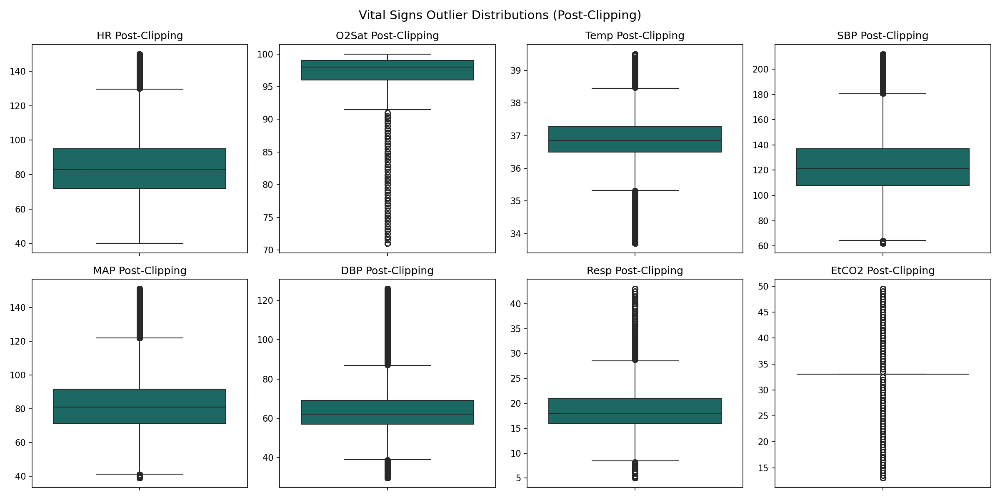

This report documents the dataset preprocessing pipeline, verifying that range validations, time-series imputations, winsorizations, and scaling parameters are correctly executed.
| Split | Patients Count | Total Hour Records | Sepsis Ratio (%) |
|---|---|---|---|
| Training Split | 28,235 | 1,086,436 | 7.27% |
| Validation Split | 6,050 | 231,472 | 7.27% |
| Testing Split | 6,051 | 234,302 | 7.27% |
| Feature | Physiological Range Limit | Train Replaces | Val Replaces | Test Replaces |
|---|---|---|---|---|
| HR | 20 - 250 | 0 | 4 | 0 |
| Temp | 25 - 45 | 5 | 0 | 1 |
| Resp | 4 - 80 | 1,333 | 288 | 216 |
| SBP | 40 - 300 | 63 | 27 | 24 |
| MAP | 20 - 200 | 286 | 85 | 73 |
| DBP | 20 - 200 | 55 | 20 | 28 |
| pH | 6.8 - 8.0 | 8 | 1 | 2 |

| Verification Step | Status | Details |
|---|---|---|
| Null Values Check | PASSED | 0 missing values in train, val, and test splits |
| Duplicate Records Check | PASSED | 0 duplicate records in all partitions |
| Patient Leakage Check | PASSED | Overlaps: Train/Val: 0, Train/Test: 0, Val/Test: 0 (0 overlap) |
| Schema Symmetrics | PASSED | All splits share exactly 68 columns |
The preprocessing foundation is stable, leak-proof, and fully reproducible. Processed datasets are stored in Parquet format and ready for sequence formatting and LSTM training.